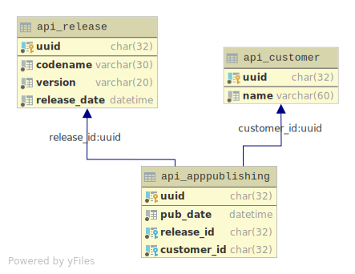
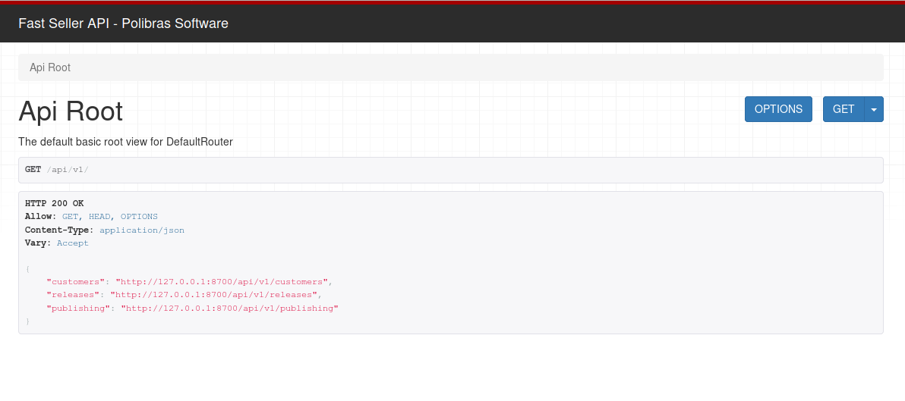

Visão geral
Esta página descreve os recursos e endpoints da aplicação FastSeller XT REST API.
Os recursos da API podem ser acessados livremente, não há qualquer autenticação.
Os recursos abordados a seguir são:
- Customers
- Releases
- App Publishing
Nota 1:
Talvez você queira voltar a seção sobre terminologia apresentada na página de introdução.
Nota 2:
para efeitos de illustração, vamos assumir durante o documento que o endereço da API é:http://127.0.0.1/api/v1
CRUD: Create, Retrieve, Update and Destroy
Para executar uma ação sobre um dado recurso, uma requisição HTTP é feita para um URL
que um identifica usando um verbo HTTP apropriado.
| Verbo | Descrição |
|---|---|
| HEAD | Pode ser emitido contra um recurso para obter informações de HTTP header |
| GET | Usado para recuperar recursos |
| POST | Usado para criar recursos |
| PUT | Usado para atualizar um dado recurso |
| DELETE | Usado para atualizar um dado recurso |
A representação interna das entidades é com segue:

Acesso da API pelo navegador
Como esta aplicação está no topo do DRF, então podemos nos beneficiar da
Browsable API,
digitando o endereço (ex: http://127.0.0.1:8000/api/v1/) no navegador:

Ou a versão em JSON: http://127.0.0.1:8000/api/v1/?format=json.
A seção seguinte lista e documenta as operações sobre os endpoints.
Customers endpoint
GET - Listagem
curl -H 'Accept: application/json; indent=4' -X 'GET' 'http://127.0.0.1:8000/api/v1/customers'
Exemplo de retorno
[
{
"uuid": "6193e9b3-7918-4ccc-8c38-be35602df2a1",
"name": "FooBar LTDA"
},
{
"uuid": "4e888c18-5819-4da1-b4b9-0d495f7a4a2a",
"name": "ALIANCA DISTRIBUIDORES LTD"
}
]
POST - Criando um cliente
Parâmetros:
| nome | tipo | descrição |
|---|---|---|
| name | string | O nome do cliente |
curl -H 'Content-Type: application/json' -X 'POST' 'http://127.0.0.1:8000/api/v1/customers' \
-d '{"name": "EMPRESA XYZ"}'
Exemplo de retorno
{"uuid":"e44ded41-e6f9-4cdb-a136-0f2d8977f2bb","name":"EMPRESA XYZ"}
PUT - Editando um cliente
Parâmetros:
| nome | tipo | descrição |
|---|---|---|
| name | string | O nome do cliente |
curl -H 'Content-Type: application/json' \
-X 'PUT' 'http://127.0.0.1:8000/api/v1/customers/e44ded41-e6f9-4cdb-a136-0f2d8977f2bb' \
-d '{"name": "EMPRESA ltd"}'
Exemplo de retorno
{"uuid":"e44ded41-e6f9-4cdb-a136-0f2d8977f2bb","name":"EMPRESA ltd"}
Releases endpoint
GET - Listagem
curl -H 'Accept: application/json; indent=4' -X 'GET' 'http://127.0.0.1:8000/api/v1/releases'
Exemplo de retorno
[
{
"uuid": "42cdb17a-5c19-46be-819c-d6a06672c04d",
"version": "1.2.0",
"codename": "",
"release_date": "2019-03-27T05:03:16.467478Z"
},
{
"uuid": "fb0276a6-11ab-4457-b9a6-ee6ba7e2b6e9",
"version": "1.0.1",
"codename": "Ambar",
"release_date": "2019-03-27T03:36:39.288735Z"
}
]
POST - Criando um release/versão
Parâmetros:
| nome | tipo | obrigatório? | descrição |
|---|---|---|---|
| version | string | sim | O código da versão, como: 1.0.1 |
| codename | string | não | O code name da versão |
| release_date | string | não | A data de release. Formato ISO8601 |
Nota
O formato pararelease_dateé algo como: 2019-03-29T09:40:56-03:00
curl -H 'Content-Type: application/json' -X 'POST' 'http://127.0.0.1:8000/api/v1/releases' \
-d '{"version": "3.1.16", "codename": "steel", "release_date": "2019-03-29T09:40:56-03:00"}'
Exemplo de retorno
{
"uuid": "66c58e53-93f3-4df8-be02-c8670250f851",
"version": "3.1.16",
"codename": "steel",
"release_date": "2019-03-29T12:40:56Z"
}
PUT - Editando um release
Parâmetros:
| nome | tipo | obrigatório? | descrição |
|---|---|---|---|
| version | string | sim | O código da versão, como: 1.0.1 |
| codename | string | não | O code name da versão |
curl -H 'Content-Type: application/json' \
-X 'PUT' 'http://127.0.0.1:8000/api/v1/releases/66c58e53-93f3-4df8-be02-c8670250f851' \
-d '{"version": "3.1.22", "codename": "Bee"}'
Exemplo de retorno
{
"uuid": "66c58e53-93f3-4df8-be02-c8670250f851",
"version": "3.1.22",
"codename": "Bee",
"release_date": "2019-03-29T12:40:56Z"
}
App Publishing endpoint
Como vimos na parte inicial da documentação, na seção terminologia,
uma publicação representa um específico release do disponibilizado para um cliente.
Tem informações como a versão recebida pelo cliente, o próprio cliente e quando
este recebeu o update/release.
GET - Listagem
Parâmetros/filtros:
| nome | tipo | obrigatório? | descrição |
|---|---|---|---|
| customer | string | não | nome ou parte do nome de um cliente |
| pub_date | string | não | data (ISO8601) de quando recebeu a atualização |
| version | string | não | versão para filtrar |
curl -H 'Accept: application/json; indent=4' -X 'GET' 'http://127.0.0.1:8000/api/v1/publishing'
ou
curl -H 'Accept: application/json; indent=4' -X 'GET' \
'http://127.0.0.1:8000/api/v1/publishing?customer=LTDA&pub_date=2019-03-27T06:40&version=1.2.0'
Exemplo de retorno
[
{
"uuid": "2c2f98df-0ede-4315-9c04-bb36a98baf9e",
"customer": "6193e9b3-7918-4ccc-8c38-be35602df2a1",
"release": "fb0276a6-11ab-4457-b9a6-ee6ba7e2b6e9",
"pub_date": "2019-03-27T06:12:41.293705Z"
},
{
"uuid": "a99f9767-c7ea-4054-9116-d89522402ebd",
"customer": "6193e9b3-7918-4ccc-8c38-be35602df2a1",
"release": "42cdb17a-5c19-46be-819c-d6a06672c04d",
"pub_date": "2019-03-27T06:43:22.117721Z"
}
]
POST - Criando/Disponibilizando uma release para um cliente
Parâmetros:
| nome | tipo | obrigatório? | descrição |
|---|---|---|---|
| customer | string | sim | o identificador (uuid) de um cliente |
| version | string | sim | o identificador (uuid) de um release |
customer_id=5bb566f1-d259-4023-a064-6968a3c052f8
release_id=66c58e53-93f3-4df8-be02-c8670250f851
curl -H 'Content-Type: application/json' -X 'POST' 'http://127.0.0.1:8000/api/v1/publishing' \
-d '{"customer": "$customer_id", "release": "$release_id"}'
Exemplo de retorno
{
"uuid": "b567193a-a267-4bd0-8652-3c8e7b4ca4c5",
"customer": "5bb566f1-d259-4023-a064-6968a3c052f8",
"release": "66c58e53-93f3-4df8-be02-c8670250f851",
"pub_date": "2019-03-29T16:19:16.891829Z"
}
Possíveis erros ao tentar atribuir um release para um cliente são descritos a seguir.
1) Versão sendo aplicada é mais antiga que a que o cliente possui:
curl -iH 'Content-Type: application/json' -X 'POST' 'http://127.0.0.1:8000/api/v1/publishing'
-d $payload
HTTP/1.0 400 Bad Request
Server: WSGIServer/0.1 Python/2.7.13
...
{"non_field_errors":["A versão sendo aplicada é mais antiga que a que o cliente possui."]}
2) Cliente já tem a versão que está sendo aplicada. Nesse caso você receberá o seguinte retorno:
curl -iH 'Content-Type: application/json' -X 'POST' 'http://127.0.0.1:8000/api/v1/publishing'
-d $payload
HTTP/1.0 400 Bad Request
Server: WSGIServer/0.1 Python/2.7.13
...
{"non_field_errors":["Cliente já possui esta versão."]}
PUT - Editando um registro de atribuição de release
Parâmetros:
| nome | tipo | obrigatório? | descrição |
|---|---|---|---|
| customer | string | sim | o identificador (uuid) de um cliente |
| version | string | sim | o identificador (uuid) de um release |
customer_id=5bb566f1-d259-4023-a064-6968a3c052f8
release_id=66c58e53-93f3-4df8-be02-c8670250f851
id=b567193a-a267-4bd0-8652-3c8e7b4ca4c5
curl -H 'Content-Type: application/json' -X 'PUT' 'http://127.0.0.1:8000/api/v1/publishing/$id' \
-d '{"customer": "$customer_id", "release": "$release_id"}'
Exemplo de retorno
{
"uuid": "b567193a-a267-4bd0-8652-3c8e7b4ca4c5",
"customer": "5bb566f1-d259-4023-a064-6968a3c052f8",
"release": "66c58e53-93f3-4df8-be02-c8670250f851",
"pub_date": "2019-03-29T16:19:16.891829Z"
}
Os demais possíveis retornos são os mesmos de quando estamos criando um registro via POST.
DELETE - Excluindo recursos
Para todos os recursos descritos acima, a exclusão segue o mesmo padrão de request:
curl -X 'DELETE' 'http://127.0.0.1:8000/api/v1/{resource}/{id}'